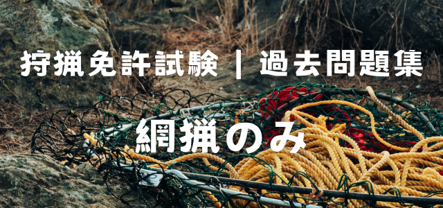

狩猟免許試験は、法令関連の問題が 全30問中13問出題されます。言葉が難しかったり紛らわしいものもありますが、法令関連の出来が合否をわけますのでしっかり準備しましょう。今回は 網猟だけに出題される問題を練習します。全猟種共通の問題は こちらで見ることができます。
2019年の例題集から抜粋していますので、法律が改訂されたりして答えが違う場合はご指摘いただけると幸いです。
練習問題
- 問）わな猟免許を取得している者が使用できる猟具は、環境大臣が定めた網及びわなである。〇か×か？
- 答）×（わな猟免許はわなのみ使用可）
- 問）わな猟免許を取得している者が使用できるわなは、くくりわな、はこわな、はこおとし、とらばさみである。〇か×か？
- 答）×（とらばさみは禁止猟法）
- 問）わな猟免許を取得している者が使用できるわなは、くくりわな、はこわな、囲いわな、おしである。〇か×か？
- 答）×（おしは禁止猟法）
- 問）網猟免許を取得している者が使用できる網は、むそう網、はり網、つき網、なげ網である。〇か×か？
- 答）〇
- 問）とりもちは、危険性が小さく簡便な猟具であり、狩猟に使用できる。〇か×か？
- 答）×
- 問） はり網のうち谷切網は、人が操作することによって網を動かして狩猟鳥を捕獲する猟具であり、狩猟に使用できる。〇か×か？
- 答）〇
- 問）はこわな及びくくりわなは、ツキノワグマ及びヒグマの狩猟に使用できる。〇か×か？
- 答）×
- 問）ノウサギやユキウサギを捕獲するためにはり網を使用する場合は、そばに人がいる場合に限り、はり網を張ったままにして使用することが出来る。〇か×か？
- 答）×（ノウサギやユキウサギを捕獲するはり網は、張りっぱなしでOK）
- 問）狩猟鳥を捕獲するためにはり網を使用する場合は、はり網を張ったままにすることはできず、そばに人がいて獲物の動きに合わせて網を操作していなければならない。〇か×か？
- 答）〇
- 問）狩猟鳥を捕獲するためにはり網を使用する場合は、はり網を張ったままにしてはいけないが、人がそばにいさえすればはり網を操作しないで張ったままにして使用することが出来る。〇か×か？
- 答）×（人がそばにいても狩猟鳥を捕獲のためのはり網は張りっぱなし禁止）
- 問）狩猟鳥の捕獲にむそう網、はこわなを使用することができる。〇か×か？
- 答）×（狩猟鳥にはこわなは使用禁止）
- 問）狩猟鳥の捕獲にはり網、なげ網を使用することができる。〇か×か？
- 答）〇
- 問）狩猟鳥の捕獲にくくりわな、はこわなを使用することができる。〇か×か？
- 答）×（狩猟鳥の捕獲にわなを使用してはいけない）
- 問）かすみ網は、狩猟には使用できず、また捕獲を目的とした所有や販売も規制されている。〇か×か？
- 答）〇
- 問）かすみ網は、はり網の一種であるので、人が操作することによって動かす場合は、狩猟に使用できる。〇か×か？
- 答）×（かすみ網は使用禁止）
- 問）「たな」の有無にかかわらず、黒色の極細糸でできている網のことをいい、現在では法定猟法から除外されている。〇か×か？
- 答）×（かすみ網は「たな」を有している網）
- 問）人の往来の激しい場所に設置する網及びわなに限り、住所や氏名等を記載した標識を付けることが義務付けられている。〇か×か？
- 答）×（網やわなには必ず住所・氏名等を記載した標識を付けなければならない）
- 問）わなにあっては、くくりわなに限り、住所や氏名等を記載した標識を付けることが義務付けられている。〇か×か？
- 答）×（網やわなには必ず住所・氏名等を記載した標識を付けなければならない）
- 問）網及びわなには、住所や氏名等を記載した標識を付けることが義務付けられている。〇か×か？
- 答）〇
- 問）カモ類を網で捕獲する場合の捕獲数の制限は、1日当たり合計して5羽である。〇か×か？
- 答）×（網で捕獲する場合は狩猟期間ごとに200羽）
- 問）カモ類を網で捕獲する場合の捕獲数の制限は、狩猟期間ごとに100羽である。〇か×か？
- 答）×（網で捕獲する場合は狩猟期間ごとに200羽）
- 問）カモ類を網で捕獲する場合の捕獲数の制限は、狩猟期間ごとに200羽である。〇か×か？
- 答）〇
- 問）国道、都道府県道、市町村道においては狩猟が禁止されているが、農道及び林道においては狩猟が認められている。〇か×か？
- 答）×（農道や林道も公道なので狩猟禁止）
- 問）公道の上における狩猟は、すべて禁止されている。〇か×か？
- 答）〇
- 問）公道の上における狩猟は禁止されているが、くくりわなにかかった獲物が公道にはみ出した場合の狩猟は認められている。
- 答）×（わなにかかった獲物が公道にはみ出すと公道での狩猟とみなされる）